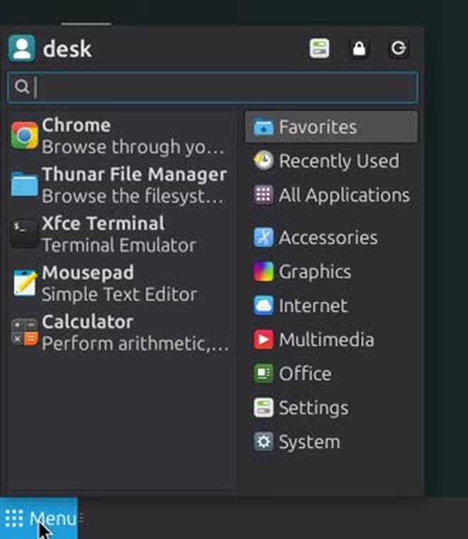

This is a full computer that runs in the cloud as part of your Claude plan. You can use it from your TV, with a keyboard and mouse, and pick up where you left off.
Open Claude on your phone, go to your Claude's Computer session and say desktop on. The TV app opens the desktop by itself.
You don't have to. When nobody is using it, it goes to sleep on its own, like a laptop with the lid closed. Your files stay.
Never used Linux? You'll be fine. It works like Windows or a Mac: a menu, windows, folders, and Chrome for the web. This walkthrough shows you where things are.
This is Claude's computer, but he only comes when you ask. He doesn't see your screen, read what you type or look at your files while you use it. When you want help (installing an app, fixing a setting), ask him in your session, like calling IT.
Like a new laptop, sign in once and your things come with you.
Sign in to Chrome to get your bookmarks, saved passwords, history and extensions. If you use Google Password Manager, that's all you need.
Use something else for passwords? Add it to Chrome and sign in.
Open Claude in Chrome to chat with it on this computer too.
Sign in to GitHub, or ask Claude to set up your tools.
Your passwords stay in Chrome or your password manager, never in your chat with Claude.

Menu, bottom left, is your Start menu: every app, and a search box. Just start typing.
Desktop icons: double-click to open. Bottom bar: your open windows, the volume and the clock.
Windows: drag one to the left or right edge to fill half the screen, to the top to fill it all. The buttons top right minimize, maximize and close.
| Ctrl C / V | Copy / paste, everywhere |
| Ctrl T | New tab in Chrome |
| Ctrl Alt T | Terminal (for typing commands, if you like) |
| Right-click | More options, like on Windows |
Your folders are where you'd expect: Documents, Downloads, Pictures, Music, Videos.
Claude's computer doesn't have much room, and it can be replaced now and then. Keep what matters in a cloud drive you already use: Google Drive, OneDrive, Dropbox or iCloud all work in Chrome.
The cloud machine is sometimes replaced. To keep your Chrome logins when that happens, ask Claude: set a vault password. A box appears here on the screen for you to type it, never in the chat.
Linux doesn't use .exe or .dmg installers. Instead, just ask Claude.
Say install GIMP, install Spotify or I need something to edit videos. Claude installs it and it shows up in the Menu.
Chrome and Firefox, LibreOffice (Word, Excel and PowerPoint files), GIMP (photos), VLC (music and videos), Notes, Files, a PDF viewer and a calculator. Ctrl Shift Esc opens the Task Manager.
No phone handy? Ask Claude once to set up waking from the TV and choose a 4-digit PIN. After that, OK and your PIN on the TV's asleep screen turns it on.
You can open this desktop in a browser on your own devices too. On a phone, the keyboard button bottom right opens the keyboard.
Enjoy your computer. If something isn't right, tell Claude what you see, in your own words.
While the TV app is open, this computer is on your home network. So when you ask, Claude can work on things in your house too: smart lights and plugs, cameras, your router, the other computers in the house. Try asking him to give my home network a check-up. Like everything else here, he only does it when you ask.
You can open this walkthrough again from the Menu: Welcome.